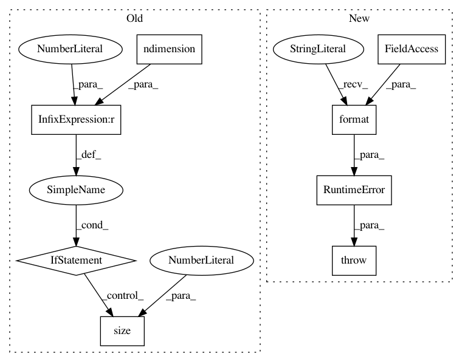

91b0d220c8e816766fd4565e1d2f5115d3afbefe,gpytorch/lazy/lazy_tensor.py,LazyTensor,matmul,#LazyTensor#Any#,630
Before Change
// Work out batch dimension, if necessary
lazy_tsr = self
if lazy_tsr.ndimension() == 3 and tensor.ndimension() == 3:
if lazy_tsr.size(0) == 1 and tensor.size(0) > 1:
lazy_tsr = lazy_tsr.repeat(tensor.size(0), 1, 1)
elif tensor.size(0) == 1:
tensor = tensor.expand(lazy_tsr.size(0), tensor.size(1), tensor.size(2))
elif self.ndimension() > 3 or tensor.ndimension() > 3:
raise RuntimeError
func = Matmul(self.representation_tree())
return func(tensor, *self.representation())
@property
After Change
)
)
elif self.dim() != tensor.dim():
raise RuntimeError(
"LazyTensor (size={}) and right-hand-side Tensor (size={}) should have the same number "
"of dimensions.".format(self.shape, tensor.shape)
)
elif self.batch_shape != tensor.shape[:-2] or self.shape[-1] != tensor.shape[-2]:
raise RuntimeError(
"LazyTensor (size={}) cannot be multiplied with right-hand-side Tensor (size={}).".format(
self.shape, tensor.shape
In pattern: SUPERPATTERN
Frequency: 3
Non-data size: 8
Instances
Project Name: cornellius-gp/gpytorch
Commit Name: 91b0d220c8e816766fd4565e1d2f5115d3afbefe
Time: 2018-10-12
Author: gpleiss@gmail.com
File Name: gpytorch/lazy/lazy_tensor.py
Class Name: LazyTensor
Method Name: matmul
Project Name: cornellius-gp/gpytorch
Commit Name: b2951813547426828d313a80c52de8a619e99731
Time: 2018-11-26
Author: gpleiss@gmail.com
File Name: gpytorch/lazy/constant_mul_lazy_tensor.py
Class Name: ConstantMulLazyTensor
Method Name: __init__
Project Name: cornellius-gp/gpytorch
Commit Name: 91b0d220c8e816766fd4565e1d2f5115d3afbefe
Time: 2018-10-12
Author: gpleiss@gmail.com
File Name: gpytorch/lazy/lazy_tensor.py
Class Name: LazyTensor
Method Name: root_decomposition